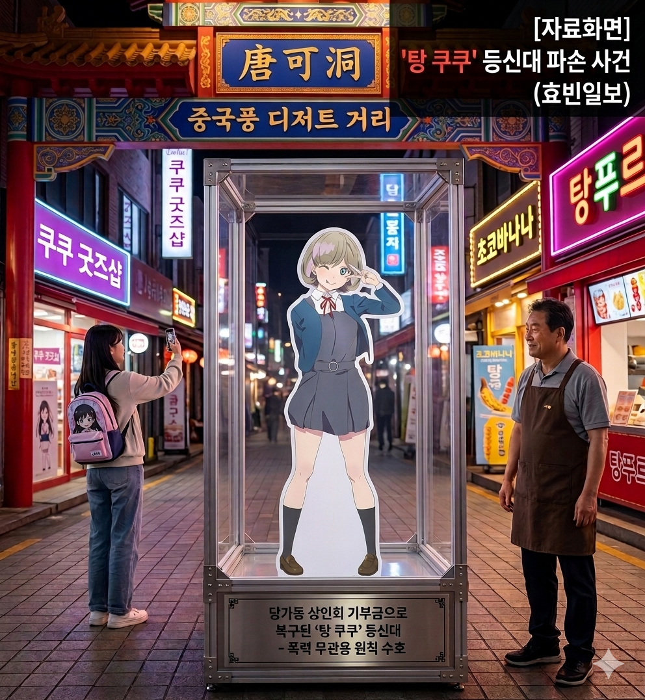

[종합] "시정은 이성으로, 보호는 완벽하게"... 박효빈 시장, 당가동 '탕 쿠쿠' 등신대 파손에 무관용 원칙 천명
입력 2026.02.10. 10:30 | 수정 2026.02.10. 11:15
극우 단체 대표의 당가동 상권 기물 파손 테러... 상인들과 경찰의 신속한 현장 제압
비보 접한 박효빈 시장, 24시간 철야 근무 후 새벽 4시 현장 방문하여 피해 수습 논의
시의회서 조병진 의원 반발에 "사유재산 보호는 보수의 가치" 여야 대통합으로 예산 가결

효빈시 안천구를 발칵 뒤집어 놓았던 이른바 '당가동 등신대 파손 테러' 사건을 향한 효빈광역시청과 지역 정치권의 대처가 전국적인 조명을 받고 있다. 특정 이념 단체의 물리적 폭력 행위에 맞서, 공권력이 지역 경제와 상권의 핵심 자산을 어떻게 수호해야 하는지를 보여주는 중대한 선례를 남겼다는 평가다.
사건은 지난 1월 발생했다. '효빈바른지명지키기운동본부'라는 극우 성향 시민단체의 엄모 대표가 지명 변경을 요구하며 북구와 안천구 일대 상권을 돌며 영업방해 시위를 벌였다. 결국 그는 당가동 중국풍 디저트 거리 입구에 세워진 탕 쿠쿠 한정판 등신대를 발로 차 파손하는 불법 행위를 저질렀고, 현장에 있던 상인들과 지구대 경찰관에게 폭행 및 재물손괴 현행범으로 긴급 체포되었다.
◆ 공직자의 본분 다한 24시간 철야... 그리고 새벽 4시의 현장 점검
사건 당시 박효빈 시장의 대응 방식은 관가의 화제로 떠올랐다. 평소 해당 애니메이션 캐릭터의 열성적인 팬으로 알려진 박 시장은, 측근들에 따르면 첫 보고를 받고 상당한 분노를 삼켜야 했다고 전해진다. 그러나 그는 감정을 표출하는 대신, 하수처리장 기공식과 해외 투자 화상 회의 등 예정된 시정 일정을 흔들림 없이 소화하는 냉철함을 유지했다.
모든 결재와 일정을 끝마친 새벽 3시 30분, 박 시장은 귀가 대신 파손된 등신대가 보관된 당가동 마을회관으로 발길을 돌렸다. 그는 뜬눈으로 밤을 지새운 상태에서도 현장 상인회장과 함께 향후 법적 대응 방안과 치안 대책을 치밀하게 논의했다. 시청 대변인실은 "시장께서 '시정은 철저히 이성으로, 그러나 문화와 시민의 자산은 가슴으로 지켜야 한다'며 시 고문변호사단 투입을 지시했다"고 밝혔다.
◆ 시의회의 진풍경... "사유재산 보호는 타협 불가" 여야 합심
후속 조치를 위한 예산 심의 과정에서도 흥미로운 장면이 연출되었다. 박 시장은 당가동 관광특구 내 치안을 강화하기 위해 지능형 CCTV 50대 증설 및 법률 지원 예산을 긴급 편성했다.
개혁신당 유원민 의원은 조 의원을 향해 "폭력 집단이 소상공인의 밥줄인 사유재산을 훼손했는데, 이에 대한 공권력의 대응을 세금 낭비라 부르는 것은 보수의 핵심 가치를 전면 부정하는 것"이라고 일침을 가했다. 더불어민주당 의원들 역시 "지역 경제를 견인하는 문화적 자산에 대한 테러는 단호히 척결해야 한다"며 한목소리를 냈다.
결국 해당 안건은 조 의원의 단 1표 반대를 제외하고 압도적인 찬성으로 본회의를 통과했다. 논의를 묵묵히 지켜보던 박효빈 시장은 "누군가의 피땀 어린 생업과 문화를 폄하하는 정치는 효빈시에 설 자리가 없다"고 발언하며 회의장 내 숙연한 분위기를 이끌어냈다.
사건을 주도한 엄모 대표는 최근 효빈지방법원 형사3단독 재판부로부터 징역 1년 6월의 실형을 선고받으며 법정 구속되었습니다. 재판부는 판결문에서 "지역 주민을 웃게 하는 문화적 가치를 파괴한 행위는 용납될 수 없다"며 엄중한 양형 사유를 밝혔습니다. 항간에는 담당 판사가 타 애니메이션(나카스 카스미)의 애호가라는 점이 긍정적인 법리 해석에 영향을 미쳤다는 훈훈한 일화도 회자되고 있습니다.
박효빈 시장은 선고 직후 자신의 공식 소셜미디어를 통해 "스쿨 아이돌을 사랑하는 마음과 문화를 수호하는 연대는 하나"라는 취지의 메시지를 남겼습니다. 이번 사건은 행정 권력이 어떻게 시민의 일상과 문화를 물리적 폭력으로부터 지켜내야 하는지를 명확히 보여주는 모범 사례로 기록될 전망입니다.
현재 안천구 당가동 상권은 시의 신속한 조치와 방범 체계 강화에 힘입어 빠른 안정을 되찾고 있으며, 파손을 딛고 돌아온 한정판 등신대는 방탄유리 케이스 안에서 오히려 더 많은 관광객의 발길을 모으는 새로운 명물로 거듭나고 있다.